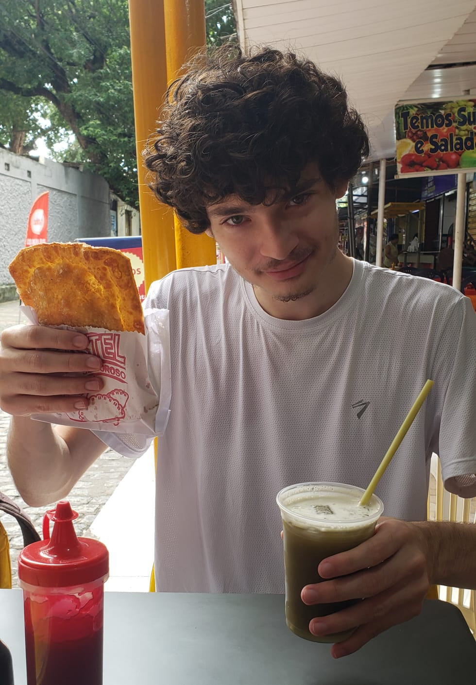

Durante os dias da semana, acordo as 6:30 e vou para a universidade onde curso Ciencia da Computação, estou no quinto periodo.
Dependendo do que o meu grupo estiver fazendo, eu geralmente volto entre 12:30-15:00.
No meu tempo livre nesses dias, geralmente opto por videogames e usando imageboards.
Costumo dormir entre as 21:00-00:00.
Durante o fim de semana, gosto de fazer arte digital, moddar jogos, ou simplesmente jogar muitas e muitas horas de videogame.
Nesses dias, passo a dormir as 5:00-6:00. Entre as 22:30 e 04:30, costumo assistir filmes streamados em uma comunidade na internet. Os filmes escolhidos de cada fim de semana seguem um determinado tema, o próximo sendo sorteado no final de cada semana.
Quando em casa, estou praticamente sempre disponivel no Discord e IRC.
"O bom da preguiça e que você não comete os outros pecados"
